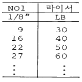
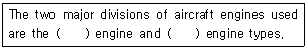
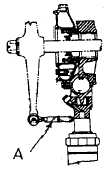
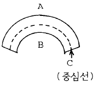

항공기체정비기능사 (2001-07-22 기출문제)
1과목: 비행원리
1. 입구 단면적이 10cm2, 출구 단면적이 20cm2인 관의 입구에서 속도가 12m/s인 경우 출구에서의 속도는 몇m/s인가? (단, 유체는 비압축성 유체이다.)
- 5
- 6
- 7
- 8
(정답률: 82%)

2. 공기보다 가벼운 항공기 중 계류기구란?
- 바람이 부는데 따라 자유로 이동하는 것
- 지표면과 줄로 연결되어 한곳에 고정된 것
- 추진장치와 조종장치를 갖춘 비행선
- 가벼운 가스를 넣어 띄우는 연식비행선
(정답률: 66%)
3. 마하수의 정의에 대하여 가장 올바르게 설명한 것은?
- 음속이 증가하면 증가한다.
- 음속을 비행체 속도로 나눈 값이다.
- 비행체의 속도가 증가하면 증가한다.
- 음속과 비행체의 속도에 비례한다.
(정답률: 62%)
4. 충격파의 강도를 가장 올바르게 나타낸 것은?
- 충격파 전.후의 압력차이
- 충격파 전.후의 온도차이
- 충격파 전.후의 속도차이
- 충격파 전.후의 유량차이
(정답률: 84%)
5. 비행기의 이.착륙성능에서 거리의 관계를 옳게 연결한 것은?
- 지상활주거리= 이륙거리 x 상승거리
- 이륙거리= 지상활주거리 + 상승거리
- 상승거리= 지상활주거리 + 이륙거리
- 이륙거리= 지상활주거리 ÷ 상승거리
(정답률: 79%)
6. 헬리콥터가 비행기와 같은 고속도를 낼 수 없는 이유로서 가장 관계가 먼 것은?
- 후퇴하는 깃의 날개끝 실속
- 후퇴하는 깃뿌리의 역풍범위의 영향
- 전진하는 깃끝의 마하수 영향
- 회전하는 날개깃의 수
(정답률: 71%)
7. 비행기의 날개골의 캠버가 날개골의 공력특성에 미치는 영향에 대하여 가장 올바르게 설명한 것은?
- 캠버가 크면 양력이 증가하며 항력도 증가한다.
- 캠버가 크면 양력이 증가하나 항력은 감소한다.
- 캠버가 크면 양력이 감소하나 항력은 증가한다.
- 캠버가 크면 양력이 감소하고 항력도 감소한다.
(정답률: 50%)
8. 비행기의 무게가 2,000kg이고, 날개면적이 50m2이며, 실속 받음각에서의 양력계수가 1.6일 때 실속속도는? (단, 공기의 밀도는 1/8 kg·sec2/m4 이다.)
- 68㎞/h
- 70㎞/h
- 72㎞/h
- 76㎞/h
(정답률: 68%)
9. 비행기의 세로 안정에서의 평형점(trim point)이란 다음중 어떠한 점인가? (단, CM은 키놀이 모멘트 계수이다.)
- CM = 0
- CM > 0
- CM < 0
- CM != 0
(정답률: 87%)
10. 조종면이 움직이는 방향과 반대 방향으로 작동하도록 기계적으로 연결되어 있는 탭(tab)은?
- 트림탭(trim tab)
- 평형탭(balance tab)
- 서보탭(servo tab)
- 스프링탭(spring tab)
(정답률: 52%)
11. 헬리콥터에서 플래핑 힌지를 사용하므로써 생기는 장점이 아닌 것은?
- 회전축을 기울이지 않고 회전면을 기울일 수 있다.
- 기하학적인 불평형을 제거할 수 있다.
- 뿌리부위에 발생되는 굽힘력을 없앨 수 있다.
- 돌풍에 의한 영향을 제거할 수 있다.
(정답률: 44%)
12. 비행기가 정상 수평선회시 경사각이 60°일때의 하중배수는 얼마인가?
- 1
- 2
- 3
- 4
(정답률: 67%)
13. 유해항력에(Parasite drag)으로 분류되지 않는 것은?
- 압력항력
- 점성항력
- 형상항력
- 유도항력
(정답률: 66%)
14. 비행기가 평형상태에서 벗어난 뒤에 다시 평형상태로 되돌아 가려는 초기의 경향을 가장 적절하게 설명한 것은?
- 정적 안정성이 있다. [양(+)의 정적 안정]
- 동적 안정성이 있다. [양(+)의 동적 안정]
- 정적으로 불안정하다. [음(-)의 정적 안정]
- 동적으로 불안정하다. [음(-)의 동적 안정]
(정답률: 78%)
15. 부조종면(secondary control surface)에 속하는 것은?
- 도움날개(aileron)
- 승강키(elevator)
- 방향키(rudder)
- 플랩(flap)
(정답률: 85%)
16. 축에 장착된 기어나 베어링 등을 빼낼 때 사용하는 공구로 가장 적당한 것은?
- Adjustable Wrench
- Socket
- Puller
- Rachet Handle
(정답률: 55%)
17. 케이블 장력 측정기(cable tension meter)를 이용하여 직경이 1/8"인 케이블의 장력을 측정하려고 한다. 이때 사용해야 할 라이서의 NO는 1번 이었다. 만약 지시치가 19였다면 이때 케이블의 장력은?

- 35LBS
- 40LBS
- 45LBS
- 50LBS
(정답률: 79%)
18. 17ST (2017) - D RIVET에서″D″는 무엇을 의미하는가?
- RIVET의 머리모양을 나타낸 것이다.
- RIVET의 길이를 나타낸 것이다.
- RIVET의 재질기호이며, 상온에서는 너무 강해 그대로는 리베팅(RIVETING)할 수 없으며 열처리를 한후 사용 가능하다.
- RIVET의 재질기호이며 강한 강도가 요구되는 곳에 사용하며 열처리에 관계 없이 사용된다.
(정답률: 67%)
19. 국부적으로 색깔이 변했거나 심한 경우 재료가 떨어져 나간 형태로 과열에 의해 손상되는 상태는?
- 구부러짐(bow)
- 마손(burr)
- 균열(crack)
- 소손(burning)
(정답률: 80%)
20. 항공기 표피(Skin)같이 얇은 판재의 균열을 검사할 때, 표면결함에 대한 검출감도가 가장 좋은 검사는?
- 자분탐상 검사
- 형광침투 검사
- 염색침투 검사
- 와전류 탐상 검사
(정답률: 30%)
2과목: 항공기정비
21. 화재의 종류별 진화방법이 잘못 연결된 것은?
- A급화재-냉각법
- B급화재-냉각법
- D급화재-질식법
- C급화재-질식법과 냉각법
(정답률: 58%)
22. 항공기를 들어 올리는 작업을 할 때, 안전사항과 가장 관계가 먼 것은?
- 사용할 장비의 작동상태를 점검한다.
- 어댑터등 부속장비의 정확한 사용과 기체의 중량을 확인해야 하며, 필요한 경우에는 밸러스트를 사용한다.
- 항공기를 들어올리고 내릴 때는 천천히 꼬리부분이 먼저 내려오도록 한다.
- 작업중에 항공기 안에 사람이 있어서는 안된다.
(정답률: 83%)
23. Which term means 0.001 ampere?
- Microampere
- Kiloampere
- Milliampere
- Centiampere
(정답률: 63%)
24. 다음 ( ) 안에 알맞는 말은?

- Reciprocating, Gas turbine
- Ram, Pulse
- turbojet, turbofan
- opposed, Radial
(정답률: 68%)
25. 최소 측정값이 1/1000 mm인 마이크로 미터의 아래 그림이 지시하는 측정값은? (문제 복원 오류로 그림이 없습니다. 정답은 3번입니다.)
- 7.763 mm
- 7.753 mm
- 7.743 mm
- 7.703 mm
(정답률: 85%)
26. 세척제, 침투제, 현상제가 순차적으로 검사에 이용되는 검사법은?
- 자분탐상 검사
- 육안 검사
- 초음파 검사
- 침투탐상 검사
(정답률: 85%)
27. On Condition 정비기법에 대한 설명으로 틀린 것은?
- 장비품이 정기적으로 장탈 / 분해되어 정비되는 것을 요한다.
- 주어진 점검주기를 요한다.
- 주기점검에서 반복적으로 행하는 Inspection, Check, Test, Service 등을 요한다.
- 감항성유지에 적절한 점검 및 작업방법이 적용되어야 하며,효과가 없을 경우에는 CM으로 관리할 수 있다.
(정답률: 42%)
28. 항공기 운송의 목적(정비 목적)중 쾌적성에 대한 설명중 가장 옳은 것은?
- 승객에게 만족과 신뢰감을 주기 위해 청결과 미관 상태를 최대한 유지
- 승객에게 만족과 신뢰감을 주기 위해 안전과 미관 상태를 최대한 유지
- 승객에게 만족과 신뢰감을 주기 위한 효율적 정비 작업의 서비스
- 승객에게 만족과 신뢰감을 주기 위한 정시성 확보
(정답률: 71%)
29. 지상 안전의 책임은 누구에게 있는가?
- 감독자
- 모든 작업자
- 관계 기관
- 총 책임자
(정답률: 68%)
30. 불안전한 조건에서 발생되는 사고와 관계 없는 것은?
- 물리적 위험 상태
- 정돈 불량
- 기재 결함
- 주위 집중 산만
(정답률: 59%)
31. 1시간 이상 귀의 보호 대책이 없으면 난청 정도를 느낄 수 있는 소음의 한계는?
- 95 dB
- 100 dB
- 140 dB
- 180 dB
(정답률: 59%)
32. 항공기 정비 중에서 일반적인 보수에 속하지 않는 것은?
- 항공기 지상 취급
- 항공기 점검
- 항공기 조절 및 검사
- 항공기의 부품 교환
(정답률: 44%)
33. 얇은 패널에 너트를 부착하여 사용할 수 있도록 고안된 특수 너트는?
- 앵커너트
- 평너트
- 캐슬 너트
- 자동 고정 너트
(정답률: 62%)
34. 기체 수리시 판재를 평면 설계할 때, 판재를 정확히 수직으로 구부릴 수 없기 때문에 굽혀지는 부분에 여유 길이가 생기는데, 이것을 무엇이라 하는가 ?
- 최소 굽힘 반지름
- 굽힘 여유
- 세트백
- 스프링백
(정답률: 72%)
35. 항공기에 사용되는 호스의 종류 중에서 모든 액체류에 사용이 가능하고 사용온도의 범위가 가장 넓은 호스는?
- 부나-N (buna-N)
- 네오프렌 (neoprene)
- 부틸 (butyl)
- 테프론 (teflon)
(정답률: 54%)
36. 여압장치 항공기는 비행조종 계통과 기관조종 계통 등의 조종을 위하여 사용되는 각종 케이블이 여압실 벽을 통하여 움직이게 되어있는데, 이 틈새를 통하여 여압 공기가 새어나오는 것을 방지하기 위해 사용되는 것은?
- 밀폐제(sealant)
- 압력시일(Pressure seal)
- 팩킹(packing)
- 가스켓(Gasket)
(정답률: 42%)
37. 날개 윗면의 바깥판 일부를 움직여 도움날개와 같이 비행기를 조종하거나 착륙 활주중에 스피이드 브레이크(Speed Brake)의 역할을 담당하는 장치는?
- 플랩(flap)
- 스포일러(spoiler)
- 도움날개(aileron)
- 슬랫(slat)
(정답률: 83%)
38. 케이블 장력조절기(CABLE TENSION REGULATOR)의 사용 목적으로 가장 올바른 것은?
- 조종계통의 케이블(CABLE)장력을 조절한다.
- 조종사가 케이블(CABLE)의 장력을 조절한다.
- 주조종면과 부조종면에 의하여 조절한다.
- 온도변화에 관계없이 자동적으로 항상 일정한 케이블(CABLE)의 장력을 유지한다.
(정답률: 52%)
39. 날개를 구성하는 주요 구성부재로 가장 올바른 것은?
- 날개보(SPAR), 롱저론(LONGERON), 리브(RIB), 외피(SKIN)
- 날개보(SPAR), 리브(RIB), 스트링거(STRINGER)
- 날개보(SPAR), 리브(RIB), 외피(SKIN), 벌크헤드(BULKHEAD)
- 날개보(SPAR), 리브(RIB), 스트링거(STRINGER), 정형재(FORMER), 외피
(정답률: 46%)
40. 페일세이프 구조(Failsafe Structure)의 형식이 아닌 것은?
- 다경로 하중구조
- 응력 외피구조
- 하중 경감구조
- 대치구조
(정답률: 72%)
3과목: 항공기체
41. 대형 항공기의 도장(Painting) 재료로 사용되는 열경화성수지는?
- PVC
- 폴리에틸렌
- 폴리우레탄
- 나일론
(정답률: 52%)
42. 올레오 스트러트(Oleo strut)의 팽창된 길이를 알아내는 일반적인 방법으로 가장 올바른 것은?
- 스트러트(Strut)의 노출된 부분에 길이를 측정한다.
- 스트러트(Strut)의 액량을 측정한다.
- 프로펠러(Propeller)의 팁(Tip) 간격을 측정한다.
- 지면과 날개의 부분과의 거리를 측정한다.
(정답률: 63%)
43. 착륙장치를 타이어의 수에 따라 분류했을 때 틀린 것은?
- 단일식
- 이중식
- 다발식
- 보우기식
(정답률: 45%)
44. 지름 2㎝인 원형 단면봉에 3,000kgf의 인장하중이 작용할때 단면에서의 응력은 몇 kgf/cm2 인가?
- 477.5
- 750
- 954.9
- 1909.8
(정답률: 53%)
45. 헬리콥터의 회전날개중 허브에 플래핑힌지와 페더링힌지는 가지고 있으나 항력힌지가 없는 형식의 회전날개는?
- 관절형 회전날개
- 반고정형 회전날개
- 고정식 회전날개
- 베어링리스 회전날개
(정답률: 60%)
46. 헬리콥터의 주회전날개의 궤도점검에서 궤도가 맞지 않을 경우 발생하는 진동은?
- 저주파수 진동중 종진동
- 중간주파수진동
- 저주파수 진동중 횡진동
- 고주파수진동
(정답률: 43%)
47. 헬리콥터의 주요 3조종계통에 속하지 않는 것은?
- 동시피치조종계통
- 자동조종계통
- 주기피치조종계통
- 방향조종계통
(정답률: 78%)
48. 그림의 헬리콥터 꼬리 회전날개를 나타낸것 중 A부분의 명칭은?

- 피치변환기구
- 윤활유 저장탱크
- 피치변환빔
- 꼬리회전날개 헤드
(정답률: 68%)
49. 물체에 휨모멘트(Bending Momemt)가 작용 할 때 발생하는 응력에 대해 가장 올바르게 설명한 것은?

- A에는 압축응력이 발생한다.
- B에는 인장응력이 발생한다.
- C에는 압축응력이 발생한다.
- C에는 인장,압축응력이 발생 하지 않는다.
(정답률: 70%)
50. 항공기에는 엔진의 고온과 화재에 대비하여 방화벽을 설치한다. 다음 중 가장 올바르게 설명한 것은?
- 엔진마운트와 기체중간에 위치한다.
- 왕복엔진에서는 엔진옆에 장착한다.
- 구조역학적으로 전혀 힘을 받지 않는다.
- 제트엔진에서의 방화벽은 엔진의 일부이다.
(정답률: 45%)
51. 복합재료의 초음파검사(Ultrasonic lnspection)중 낮은 주파수의 음향을 피검사물에 주고, 그것에 대한 피검사물로부터의 응답을 이용하는 방법은?
- 반사법
- 공진법
- 투과법
- X선검사
(정답률: 50%)
52. 합금강의 식별표시에 있어서 옳게 짝지워진 것은?
- 5XXX-탄소강
- 2XXX-몰리브덴강
- 3XXX-니켈-크롬강
- 6XXX-니켈강
(정답률: 64%)
53. 휨이나 변형이 거의 일어나지 않고 부서지려는 금속의 성질은?
- 인성
- 전성
- 연성
- 취성
(정답률: 79%)
54. 구조재료의 크리프(Creep)현상에서 천이점은 무엇을 말하는가?
- 탄성범위내의 변형으로서 하중을 제거하면 원래의 상태로 돌아오는점
- 변형률이 직선으로 증가하는 점
- 변형률이 직선으로 증가하다가 급격히 증가하는 점
- 변형률이 급격히 증가하여 파단이 생기는 점
(정답률: 51%)
55. 기체강도 설계시 설계하중(Design Load)을 고려하는 이유가 아닌 것은?
- 재료의 기계적 성질등이 실제의 값과 약간씩 차이가 있다.
- 제작가공 및 검사방법 등에 따라 측정한 수치에는 항상 오차가 있기 때문이다.
- 항공역학 및 구조역학등의 이론적 계산에서 많은 가정이 있다.
- 기체의 강도는 한계 하중보다 좀더 낮은 하중에서 견딜 수 있도록 설계되어지기 때문이다.
(정답률: 69%)
56. 설계단위 측정시 여자 승객의 무게는 얼마인가?
- 55Kg
- 65Kg
- 70Kg
- 75Kg
(정답률: 68%)
57. 항공기에서 가장 무거운 무게는?
- 최대 착륙무게
- 최대 이륙무게
- 최대 영연료 무게
- 기본 자기무게
(정답률: 77%)
58. 항공기에 가해지는 모든 하중을 스킨(Skin)이 담당하는 구조형식은?
- Monocoque Type
- Warren Truss Type
- Semi-Monocoque Type
- Pratt-Truss Type
(정답률: 63%)
59. 허니컴(Honeycomb)구조의 가장 큰 장점은?
- 검사가 필요치 않다.
- 무겁고 아주 강하다.
- 비교적 방화성이 있다.
- 무게에 비해 강도가 크다.
(정답률: 81%)
60. 알루미늄 합금의 부식방지 처리법과 가장 관계가 먼 것은?
- 알클레드
- 양극처리
- 알로다인 처리
- 파아카라이징
(정답률: 60%)
유체의 질량 유지 방정식은 다음과 같다.
입구에서의 유체의 질량 유량 = 출구에서의 유체의 질량 유량
ρ1Av1 = ρ2Av2
여기서, ρ는 유체의 밀도, A는 단면적, v는 속도를 나타낸다.
입구에서의 속도 v1 = 12m/s, 입구의 단면적 A1 = 10cm2 = 0.001m2, 출구의 단면적 A2 = 20cm2 = 0.002m2 이므로,
ρ1A1v1 = ρ2A2v2
ρ1v1 = ρ2v2/2
v2 = 2ρ1v1/ρ2
비압축성 유체의 밀도는 입구와 출구에서 같으므로, ρ1 = ρ2 이다. 따라서,
v2 = 2v1 = 2 × 12m/s = 24m/s
하지만, 보기에서는 속도를 cm/s 단위로 제시하고 있으므로, m/s를 cm/s로 변환해야 한다.
24m/s = 2400cm/s 이므로, 출구에서의 속도는 2400cm/s / 100cm/m = 24m/s = 6cm/s 이다. 따라서, 정답은 "6"이다.